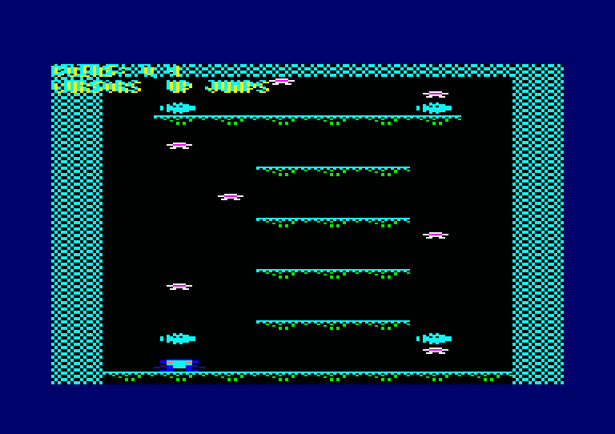
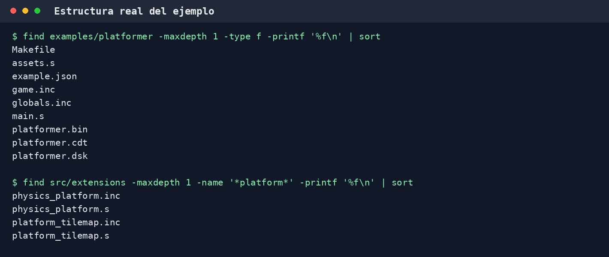
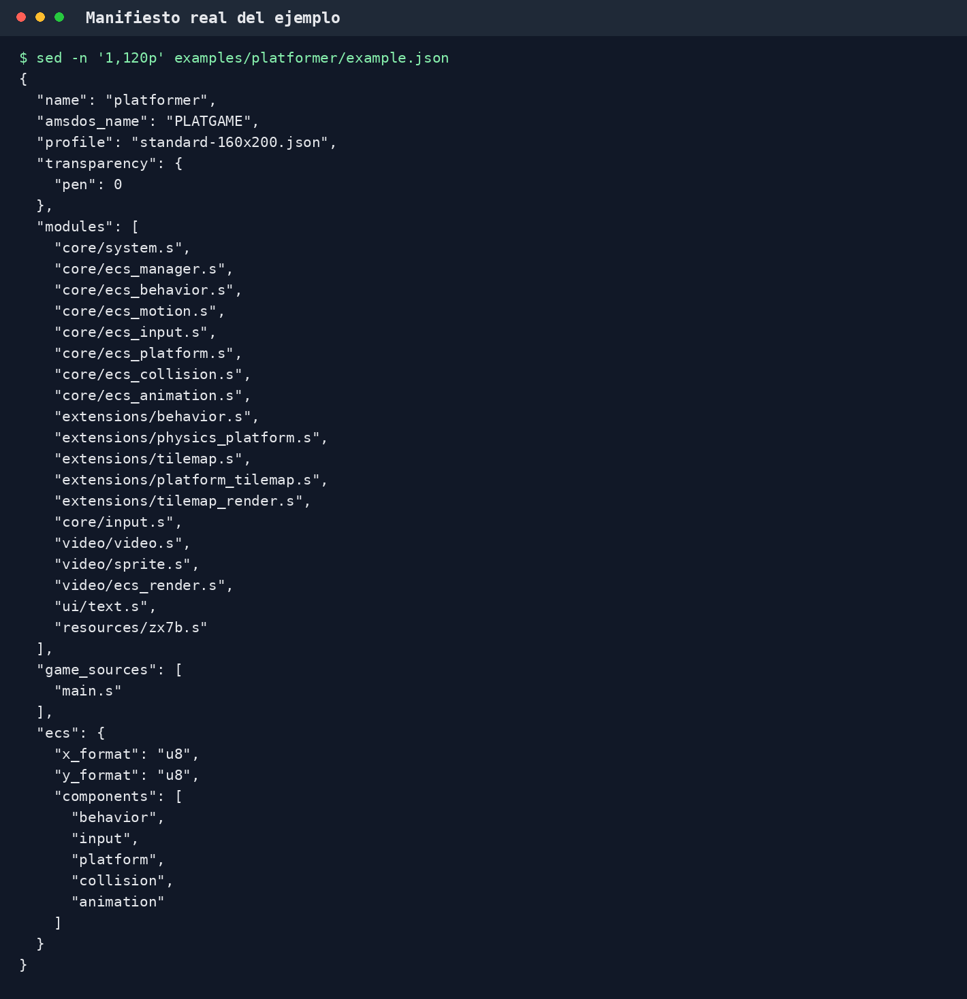
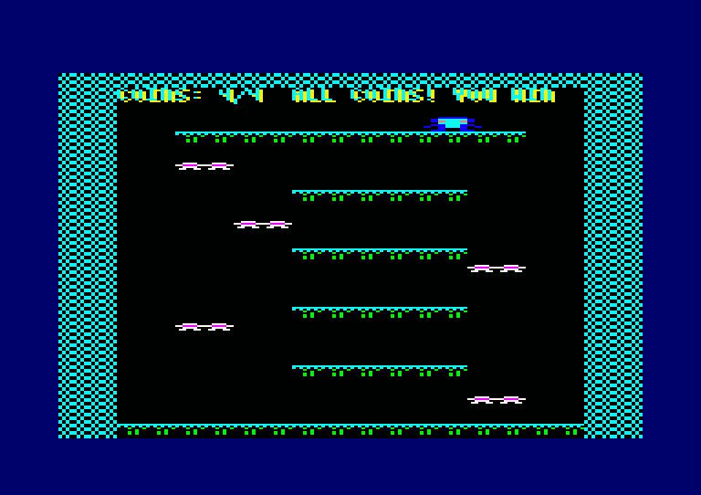
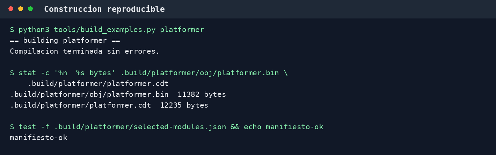

Tutorial mantenible, paso a paso, basado en el flujo de construcción y en las APIs presentes en el repositorio.
video/ecs_render. No presupone cámara con scroll, pendientes, streaming de mapas ni asignación dinámica de entidades: esas funciones no forman parte del contrato actual.El proyecto queda dividido en tres partes: example.json elige perfil, módulos y el bloque ecs con los componentes de las entidades; main.s implementa constantes, estado, inicialización y bucle; y assets/ contiene los gráficos y mapas editables, que se convierten antes de compilar. El constructor genera ecs_profile.inc (los offsets de cada campo de entidad) a partir del bloque ecs y prepara un proyecto CPCTelera aislado bajo .build/<nombre>; no copie ni edite a mano ese directorio generado.
Antes de empezar, desde la raíz de GlasnostFWK, compruebe:
test -f /config/workspace/cpctelera_next/cpctelera/cpctelera.lib
python3 --version
make --versionSi CPCTelera está en otra ruta, defina CPCT_NEXT_PATH al invocar el constructor. El valor predeterminado del repositorio es /config/workspace/cpctelera_next/cpctelera.

Para seguir el tutorial sin modificar el ejemplo distribuido, utilice otro nombre y parta de los assets del ejemplo:
mkdir -p examples/mi_plataformas
touch examples/mi_plataformas/example.json
touch examples/mi_plataformas/main.s
cp -r examples/platformer/assets examples/mi_plataformas/assetsLa captura siguiente se genera leyendo el ejemplo real. Muestra la misma separación que debe conservar el proyecto nuevo.

find; no es un esquema dibujado a mano.| Archivo | Responsabilidad recomendada |
|---|---|
example.json | Dependencias explícitas, perfil de vídeo, nombre AMSDOS y fuentes del juego. |
assets/ | Originales editables (PNG y TMX) y datos convertidos en assets/generated/: tiles, sprites, mapas comprimidos y paleta. |
main.s | Constantes, filas de creación de entidades, estado, inicialización, reglas, colisiones y bucle por frame. |
Escriba en examples/mi_plataformas/example.json:
{
"name": "mi_plataformas",
"amsdos_name": "MIPLATA",
"profile": "standard-160x200.json",
"transparency": {"pen": 0},
"modules": [
"core/system.s",
"core/ecs_manager.s",
"core/ecs_behavior.s",
"core/ecs_motion.s",
"core/ecs_input.s",
"core/ecs_platform.s",
"core/ecs_collision.s",
"core/ecs_animation.s",
"extensions/behavior.s",
"extensions/physics_platform.s",
"extensions/tilemap.s",
"extensions/platform_tilemap.s",
"extensions/tilemap_render.s",
"core/input.s",
"video/video.s",
"video/sprite.s",
"video/ecs_render.s",
"ui/text.s",
"resources/zx7b.s"
],
"game_sources": ["main.s"],
"ecs": {
"x_format": "u8",
"y_format": "u8",
"components": ["behavior", "input", "platform", "collision", "animation"]
}
}El bloque ecs fija el formato de las coordenadas y los componentes de las entidades. RENDER está siempre presente y MOTION se inserta como dependencia de input, platform y behavior. Los sistemas de movimiento y behavior exigen coordenadas u8, y el componente platform necesita core/ecs_platform.s cuando core/ecs_motion.s está seleccionado; el constructor rechaza las combinaciones incoherentes. Para ver el layout resuelto (componentes, campos y offsets) antes de compilar:
python3 tools/gen_ecs_profile.py examples/mi_plataformas/example.json \
--output examples/mi_plataformas/generated/ecs_profile.inc --previewgame_sources debe incluir main.s. transparency.pen=0 habilita el renderer transparente y coincide con el fondo de la fuente incorporada. Las rutas son relativas al directorio del ejemplo y el constructor rechaza rutas que escapen de él. amsdos_name se usa al integrar el BIN en el DSK común: debe contener entre uno y ocho caracteres AMSDOS válidos.

examples/platformer/example.json. Si el ejemplo evoluciona, el generador de capturas reflejará el cambio.modules; los .inc asociados se copian automáticamente cuando existen.El constructor copia las fuentes del consumidor bajo src/game y genera ecs_profile.inc junto a ellas. main.s lo incluye junto con los contratos de los módulos que usa:
.include "cpctelera.h.s"
.include "ecs_profile.inc"
.include "core/ecs_manager.inc"
.include "core/ecs_collision.inc"
.include "core/ecs_animation.inc"
.include "extensions/behavior.inc"
.include "video/ecs_render.inc"
.include "extensions/tilemap_render.inc"
.include "extensions/physics_platform.inc"
.include "assets/generated/assets.inc"Centralice al principio de main.s las máscaras de acción, los tipos de entidad y las reglas numéricas para no duplicarlas:
INPUT_LEFT = 0x01
INPUT_RIGHT = 0x02
INPUT_JUMP = 0x04
T_PLAYER = 1
T_COIN = 2
T_ENEMY = 3
T_DOOR = 4
LIVES_INITIAL = 10
WIN_SCORE = 4El campo type de cada entidad es un byte libre del juego: las reglas lo usan para distinguir una moneda de la puerta dentro de un mismo callback de colisión. El ejemplo distribuido mantiene una actualización de lógica por frame de vídeo (dos en el peor caso medido), pero eso no es una garantía general de rendimiento: mida de nuevo si cambia el número, tamaño o tipo de entidades.
examples/platformer no se escriben a mano: viven en assets/src/*.png y assets/src/level.tmx. make ejecuta tools/import_assets.py y solo convierte cuando cambian los originales; el resultado se ensambla desde assets/generated/assets.s. Los fragmentos de esta sección muestran el formato que produce el pipeline y sirven para entender los datos, pero no hace falta copiarlos.El mapa contiene identificadores de tile en orden de filas. Otra tabla traduce cada identificador a FWK_TILE_PASSABLE, FWK_TILE_SOLID o FWK_TILE_ONE_WAY. El ejemplo usa las rutinas nativas de CPCTelera Next con tiles de 4 bytes por 8 scanlines: 8x8 píxeles en Mode 0 y 20 columnas para cubrir la pantalla.
.include "cpctelera.h.s"
.include "extensions/tilemap.inc"
.include "extensions/tilemap_render.inc"
tile_types: .db FWK_TILE_PASSABLE, FWK_TILE_SOLID, FWK_TILE_ONE_WAY
level_map:
.db 1,1,1,1,1,1,1,1,1,1,1,1,1,1,1,1,1,1,1,1
.db 1,1,0,0,0,0,0,0,0,0,0,0,0,0,0,0,0,0,1,1
; ...añada las filas restantes...
.db 1,1,1,1,1,1,1,1,1,1,1,1,1,1,1,1,1,1,1,1
FWK_TILEMAP_DESCRIPTOR level_descriptor, level_map, tile_types, 20, 25, 2, 3, 4, 8, 3Los tamaños deben ser coherentes con los desplazamientos: 4 bytes implica shift X 2 y 8 scanlines implica shift Y 3. El render opaco solo acepta las geometrías CPCTelera 2x4, 2x8, 4x4 y 4x8 bytes. Las consultas fuera del mapa y los identificadores inválidos se tratan como error/transitable, no como una pared implícita.
Cada gráfico ocupa exactamente x_size * y_size bytes Mode 0, por filas y sin padding. Concatenelos por identificador y describa la región visible:
tileset:
.rept 32
.db 0x00 ; tile 0: 4 bytes x 8 scanlines
.endm
.rept 32
.db 0x55 ; tile 1
.endm
.rept 32
.db 0xF0 ; tile 2
.endm
FWK_TILE_RENDER_DESCRIPTOR level_view, tileset, 0, 0, 0, 0, 20, 25, 3La cámara y el viewport están en tiles; screen_x está en bytes Mode 0 y screen_y es una palabra alineada al alto del tile. El render completo valida la geometría y llama a cpct_drawTileAligned4x8_f_asm para cada celda.
player_pixels:
.rept 8
.db 0xFF,0xFF,0xFF,0xFF,0xFF,0xFF,0xFF,0xFF
.endmEl componente RENDER de cada entidad guarda el puntero al sprite (ECS_E_RENDER_SPRITE), el puntero a su buffer de fondo (ECS_E_RENDER_BACKGROUND), los flags (VISIBLE, DIRTY, MASKED, RECOLOR) y un desplazamiento de orden en Y (ECS_E_RENDER_SORT_OFFSET_Y). El buffer de fondo no lo declara usted: el renderer captura lo que cubre cada sprite antes de dibujarlo y lo repone al moverlo, y para ello toma un buffer de los pools de la escena (sección 5) la primera vez que dibuja la entidad y lo devuelve cuando deja de dibujarse. La plantilla deja ECS_E_RENDER_BACKGROUND a cero.
Cada actor es una entidad de un manager. El jugador combina RENDER, MOTION, INPUT, PLATFORM, COLLISION y ANIMATION; las monedas y la puerta solo RENDER y COLLISION. Todas viven en un único manager, con almacenamiento propio, y una escena de render lo recorre:
ENTITY_CAP = 9 ; 4 monedas, puerta, jugador y 3 enemigos
entity_storage: .ds ECS_ENTITY_SIZE * ENTITY_CAP
FWK_ECS_MANAGER_DESCRIPTOR entities, entity_storage, ENTITY_CAP
managers: .dw entities
work: .ds 8 * ENTITY_CAP ; 8 bytes por entidad con RENDER
; Buffers de fondo por clase de tamaño: ocho sprites de 4x8 (32 bytes) y uno de 8x8 (64)
FWK_ECS_RENDER_POOL pool32, 32, 8
FWK_ECS_RENDER_POOL pool64, 64, 1
pools: .dw pool32, pool64
FWK_ECS_RENDER_SCENE scene, managers, 1, work, ENTITY_CAP, pools, 2
FWK_PLATFORM_CONFIG physics_config, 80, 255, 1, 8
bindings:
.dw Key_CursorLeft
.db INPUT_LEFT
.dw Key_CursorRight
.db INPUT_RIGHT
.dw Key_CursorUp
.db INPUT_JUMP
.dw 0
.db 0La máscara cero termina la tabla de teclas y hay como máximo ocho bits de acción. Una entidad se crea copiando una plantilla con fwk_ecs_entity_create (IX=manager, HL=plantilla, devuelve IY=entidad y carry si falla). El ejemplo rellena la plantilla desde una fila de datos por actor; el núcleo de esa rutina, para el jugador:
; IX=manager; plantilla de ECS_ENTITY_SIZE bytes a cero en `tpl`
ld iy, #tpl
ld ECS_E_COMPONENTS(iy), #<PLAYER_COMPS
ld ECS_E_COMPONENTS+1(iy), #>PLAYER_COMPS
ld ECS_E_STATUS(iy), #ECS_STATUS_ACTIVE
ld ECS_E_TYPE(iy), #T_PLAYER
ld ECS_E_X(iy), #16
ld ECS_E_Y(iy), #184
ld ECS_E_WIDTH(iy), #8
ld ECS_E_HEIGHT(iy), #8
ld ECS_E_RENDER_SPRITE(iy), #<player_pixels
ld ECS_E_RENDER_SPRITE+1(iy), #>player_pixels
ld ECS_E_RENDER_FLAGS(iy), #ECS_RENDER_VISIBLE | ECS_RENDER_DIRTY
ld ECS_E_RENDER_SORT_OFFSET_Y(iy), #8 ; ordena por los pies
ld hl, #tpl
call fwk_ecs_entity_create ; carry: error, A=código
; IY=entidad creada; campos de entrada y plataforma
ld ECS_E_INPUT_ACTION_MASK(iy), #INPUT_LEFT | INPUT_RIGHT | INPUT_JUMP
ld ECS_E_PLATFORM_CONFIG(iy), #<physics_config
ld ECS_E_PLATFORM_CONFIG+1(iy), #>physics_config
ld ECS_E_PLATFORM_TILEMAP(iy), #<level_descriptor
ld ECS_E_PLATFORM_TILEMAP+1(iy), #>level_descriptor
ld ECS_E_MOTION_FLAGS(iy), #FWK_PLATFORM_AIRBORNEUse fwk_input_held (a través de fwk_ecs_system_input) para el movimiento continuo; el sistema convierte la máscara de acciones en velocidad horizontal y dispara el salto una sola vez por pulsación desde el suelo. El suelo global en 255 actúa solo como límite de seguridad si el tilemap ya posee un suelo visible. El sistema de plataforma establece FWK_PLATFORM_TILE_GROUNDED al aterrizar sobre tiles sólidos o plataformas de una dirección.
La secuencia mínima es: configuración del proyecto, descompresión del mapa, vídeo, módulos auxiliares, paleta, entrada, escena estática y creación de las entidades. fwk_project_init inicializa el sistema e instala una sola vez la tabla de transparencia configurada.
_main::
call fwk_project_init
ld hl, #map_packed + MAP_PACKED_SIZE - 1 ; ZX7B se descomprime hacia atrás
ld de, #map + MAP_SIZE - 1
call fwk_zx7b_unpack
call fwk_video_init
call fwk_text_init
ld hl, #palette
ld de, #PALETTE_SIZE
call cpct_setPalette_asm
call fwk_input_init
ld hl, #bindings
call fwk_input_set_bindings
xor a
call fwk_video_clear_visible
ld ix, #level_descriptor
ld iy, #level_view
call fwk_tilemap_render_view
jp c, fatal_data_error
ld ix, #entities
call fwk_ecs_manager_init
jp c, fatal_data_error
ld ix, #scene ; las entidades antiguas desaparecieron sin restore:
call fwk_ecs_render_reset ; devolver sus buffers de fondo
jp c, fatal_data_error
ld ix, #entities
; ... crear monedas, puerta, jugador y enemigos con fwk_ecs_entity_createLas entidades nacen con VISIBLE|DIRTY: el primer fwk_ecs_render_prepare del bucle las marca para dibujar y el primer fwk_ecs_render_draw las pinta. El mapa se dibuja antes, una sola vez; después solo se tocan las celdas que cambian. Si una rutina del manager devuelve carry, A trae el código de error de la ABI (FWK_ECS_ERR_*); el ejemplo lo guarda en platformer_status y detiene el juego.
El orden respeta el ciclo del renderer (preparar antes del VSYNC, restaurar y dibujar después) y ejecuta los sistemas en el orden que exigen sus dependencias:
fwk_input_update).game_loop:
ld hl, #fwk_ecs_tick ; un tick por iteración, para la cadencia
inc (hl)
call fwk_input_update
ld ix, #entities
call fwk_ecs_system_behavior
ld ix, #entities
call fwk_ecs_system_input
ld ix, #entities
call fwk_ecs_system_platform ; física y resolución contra el tilemap
ld ix, #entities
call fwk_ecs_system_motion_u8 ; el resto de entidades con MOTION
ld ix, #entities
call fwk_ecs_system_animation
call collisions ; fwk_ecs_collide y callbacks
call apply_events ; reglas que cambian el estado de entidades
; Prepare no toca VRAM: calcula qué cambió y en qué orden dibujar.
ld ix, #scene
call fwk_ecs_render_prepare
jp c, fatal_render_error
call fwk_system_wait_frame
ld ix, #scene
call fwk_ecs_render_restore ; solo VRAM, tras el VSYNC
jp c, fatal_render_error
ld ix, #scene
call fwk_ecs_render_draw
jp c, fatal_render_error
ld ix, #entities
call fwk_ecs_manager_collect ; libera los slots destruidos
jp game_loopCada sistema recibe IX=manager y devuelve carry con el código en A. Los sistemas de movimiento y plataforma activan DIRTY cuando la posición cambia, de modo que no hace falta sincronizar nada con el renderer. Entre fwk_ecs_render_prepare y fwk_ecs_render_draw los managers quedan bloqueados: no cree ni destruya entidades en ese tramo, porque las operaciones estructurales devuelven FWK_ECS_ERR_BUSY.
No se escribe a mano: fwk_ecs_system_input lee fwk_input_held y la máscara ECS_E_INPUT_ACTION_MASK de la entidad y fija la velocidad horizontal (la acción izquierda resta, la derecha suma y ninguna la deja a cero). La velocidad es fija: 2 bytes por frame, definida en el adaptador. Si la entidad incluye los bits de arriba (0x08) y/o abajo (0x10) en su máscara, el mismo sistema gestiona también la velocidad vertical directa (movimiento de cuatro direcciones) con FWK_ECS_INPUT_SPEED_Y y omite el salto; en un plataformas no se incluyen esos bits, por lo que la vertical queda para la física.
También lo resuelve fwk_ecs_system_input: con la acción de salto recién pulsada y el bit FWK_PLATFORM_TILE_GROUNDED activo en ECS_E_MOTION_FLAGS, fija la velocidad vertical de despegue (-8). La velocidad es un byte con signo. fwk_ecs_system_platform aplica gravedad y caída máxima y corrige paredes, techo y suelo. No use velocidades que permitan atravesar un tile completo en un solo frame: no hay barrido continuo ni subdivisión automática.
Si el juego cambia a mano la posición o la visibilidad de una entidad (por ejemplo al ocultar la puerta), debe activar ECS_RENDER_DIRTY en ECS_E_RENDER_FLAGS o usar fwk_ecs_entity_enable y fwk_ecs_entity_disable, que lo hacen por usted:
ld ix, #items
ld iy, (door)
call fwk_ecs_entity_disable ; la puerta desaparece al reiniciar el nivel
; ...al reunir la cuarta moneda
ld ix, #items
ld iy, (door)
call fwk_ecs_entity_enable ; reaparece y se dibuja en el siguiente ciclou8 son bytes Mode 0 en X y scanlines en Y. El orden de dibujo usa Y más ECS_E_RENDER_SORT_OFFSET_Y; no lo confunda con la coordenada que usa la física. Una entidad destruida con fwk_ecs_entity_mark_destroy sigue ocupando su slot hasta que fwk_ecs_manager_collect se ejecute tras el dibujo, para que el renderer pueda restaurar el fondo que cubría.Cada objeto es una entidad con RENDER y COLLISION. Cada frame, el juego comprueba al jugador contra un manager con fwk_ecs_collide (IY=jugador, IX=manager, BC=máscara de componentes, HL=callback, E=canal de contacto). El callback recibe IX=manager, IY=entidad tocada, HL=jugador y A=ENTER|STAY|EXIT. Al recoger una moneda:
fwk_ecs_entity_mark_destroy sobre la moneda;En el ciclo siguiente, fwk_ecs_render_restore repone el fondo capturado de la moneda y fwk_ecs_render_draw deja de dibujarla; después fwk_ecs_manager_collect libera el slot. Un callback no puede crear ni destruir entidades del manager que se está recorriendo salvo con mark_destroy: las reglas que cambian estados (por ejemplo mostrar la puerta) se anotan en variables y se aplican en apply_events, después de las colisiones.
Cada enemigo es una entidad con MOTION, BEHAVIOR, COLLISION y ANIMATION. Los tres usan el mismo par de sistemas: fwk_ecs_system_behavior ejecuta el programa de behavior (puntero en ECS_E_BEHAVIOR_PROGRAM) y fwk_ecs_system_motion_u8 aplica las velocidades; la animación alterna dos sprites con un descriptor compartido. El horizontal usa una primera espera de 19 ticks y tramos posteriores de 23 para recorrer X=32..54. Los verticales comparten un programa inmutable de 49 ticks, pero no estado: cada entidad guarda su propio cursor y temporizador. Para que el horizontal y el vertical derecho se turnen, una iteración cada uno, cada entidad lleva un byte de cadencia (ECS_E_CADENCE = (fase << 4) | (cada - 1)): el horizontal usa 0x11 (iteraciones impares), el vertical derecho 0x01 (pares) y el resto 0x00 (todas). El bucle incrementa fwk_ecs_tick una vez por iteración y los sistemas saltan solos a las entidades que no tocan. Como su animación también avanza una vez por ejecución, esos dos enemigos usan un descriptor con la mitad de ticks.
Las colisiones se hacen sobre ese único manager, en dos pasadas del jugador: una con E=0 para monedas y puerta (el callback distingue por ECS_E_TYPE) y otra solo contra las entidades con BEHAVIOR, con un canal de contacto (el registro E de fwk_ecs_collide). El sujeto guarda en cada canal si tocaba algo en la última pasada de ese canal, y el sistema emite ENTER solo al pasar de no tocar a tocar. El callback del enemigo descuenta una vida únicamente en ENTER, así que un contacto sostenido cuesta una sola vida. El canal es por sujeto y no por enemigo: si el jugador ya toca a un enemigo y empieza a tocar a otro sin soltar el primero, el segundo llega como STAY y no cuesta otra vida. La máscara con BEHAVIOR evita que una moneda bajo el jugador cuente como contacto de enemigo.
La puerta también es una entidad, deshabilitada al reiniciar el nivel con fwk_ecs_entity_disable. Al recoger la cuarta moneda se habilita con fwk_ecs_entity_enable; tocarla cambia al segundo mapa y repite el mismo arranque de nivel. Un reinicio genérico no debe habilitarla antes de tiempo.
Reserve las filas 1 y 2 del mapa como interior negro del HUD y mantenga los bordes laterales fuera del texto. El ejemplo coloca monedas en x=0, ayuda/estado en x=24 y vidas en x=64, todos en y=10. Como el texto con máscara no borra el glifo anterior, restaure las celdas de tile cubiertas por el texto que va a cambiar: columna 3 para el dígito de monedas, columna 19 para las dos cifras de vida, columnas 0–4 para el contador completo y columnas 6–14 para todo el mensaje de ayuda. El HUD se actualiza después de fwk_ecs_render_draw, cuando el jugador ya vuelve a estar visible.

python3 tools/build_examples.py mi_plataformasEl constructor valida las fuentes y módulos, genera la configuración de vídeo, prepara .build/mi_plataformas y ejecuta su Makefile CPCTelera. Los artefactos principales quedan en:
.build/mi_plataformas/obj/mi_plataformas.bin
.build/mi_plataformas/mi_plataformas.cdt
.build/mi_plataformas/mi_plataformas.dsk
.build/mi_plataformas/selected-modules.jsonEl JSON generado permite auditar qué fuentes, módulos, medios y ruta de CPCTelera entraron realmente en la construcción.

platformer; los tamaños se leen de los artefactos producidos y pueden cambiar cuando cambie el código.Para CDT, abra .build/mi_plataformas/mi_plataformas.cdt en un CPC o emulador y use los comandos normales de cinta de su entorno. Una construcción aislada también produce mi_plataformas.dsk; al ejecutar el flujo completo del repositorio, la política pública reúne los BIN en el DSK común descrito a continuación.
La construcción aislada no añade automáticamente un proyecto nuevo a make examples. Para convertirlo en ejemplo mantenido por el repositorio:
mi_plataformas a EXAMPLES en el Makefile raíz.tools/build_test_disk.py.tools/package_release.py.make examples.El DSK público de pruebas queda en .build/tests/GlasnostFWK-tests.dsk y su catálogo reproducible en .build/tests/catalog.json. El nombre visible del BIN procede de amsdos_name; no puede colisionar con otra entrada.
make examples
python3 -m json.tool .build/tests/catalog.json | less| Síntoma | Comprobación concreta |
|---|---|
| El enlazador no encuentra una rutina. | Confirme que su .s figura en modules y que el símbolo está declarado con .globl. |
| El jugador se desplaza el doble. | Revise si X se introdujo como píxeles; sprites y tiles usan bytes Mode 0. |
| Atraviesa paredes o suelo. | Compruebe que ECS_E_PLATFORM_TILEMAP apunta al mapa vigente y mantenga la velocidad por debajo del tamaño del tile por frame. |
| No puede saltar. | Compruebe el bit FWK_PLATFORM_TILE_GROUNDED en ECS_E_MOTION_FLAGS, ECS_E_INPUT_ACTION_MASK y el orden de sistemas (entrada antes de plataforma). |
| Quedan estelas. | Active ECS_RENDER_DIRTY al mover/cambiar/ocultar a mano, complete fwk_ecs_render_restore y fwk_ecs_render_draw, y compruebe que algún pool de la escena tiene buffers de al menos width*height bytes (si no, el renderer devuelve FWK_ECS_ERR_OVERFLOW). |
| El renderer devuelve carry. | Compare A con FWK_ECS_ERR_RENDER (fases fuera de orden), FWK_ECS_ERR_BUSY (manager bloqueado) y FWK_ECS_ERR_OVERFLOW (array de trabajo pequeño). |
| El mapa no se dibuja. | Inspeccione carry tras fwk_tilemap_render_view, dimensiones, cámara, ids y tile_count. |
| El BIN no aparece en el DSK común. | La construcción aislada no basta: sincronice las listas de integración y vuelva a ejecutar make examples. |
python3 -m unittest discover -s tests -v
python3 tools/build_examples.py platformer
python3 tests/emulator_smoke.py platformer --model 6128
python3 tests/emulator_smoke.py platformer --model 464La última pareja depende de que el entorno tenga configurado el emulador empleado por el smoke. Un resultado correcto confirma el recorrido automatizado que codifique la prueba; no demuestra todas las rutas jugables posibles.
Las tres capturas de terminal no están editadas a mano: el script lee estructura y manifiesto, construye platformer y consulta los tamaños resultantes. Regénerelas desde la raíz:
make platform-guide PYTHON=.venv-docs/bin/pythonPara regenerar imágenes sin recompilar, solo si ya existen artefactos actuales:
.venv-docs/bin/python docs/images/platformer/generate_captures.py --skip-build
.venv-docs/bin/python tools/build_manual.py \
--html docs/platform-game-guide.html \
--pdf docs/platform-game-guide.pdf \
--checksum docs/platform-game-guide.sha256Las dos capturas jugables se regeneran desde el endpoint PNG del emulador. El smoke las toma al terminar la inicialización y al alcanzar la victoria:
python3 tests/emulator_smoke.py platformer --model 6128 \
--screenshot-dir docs/images/platformer--emulator pueda iniciar AmSpiriT-Lite y su servidor local.docs/manual.html: API general y contratos.docs/physics-profiles.md: estado y configuración del perfil compacto.docs/tilemap-collision.md: consulta y resolución contra el mapa.docs/tilemap-render.md: descriptores y render completo/parcial.docs/sprites.md: descriptor, clipping, captura y restauración.docs/ecs-abi-2.0.md: layout de entidad, managers, renderer multi-manager, colisión, behavior y animación.examples/platformer: aplicación completa sobre la que se valida esta guía.